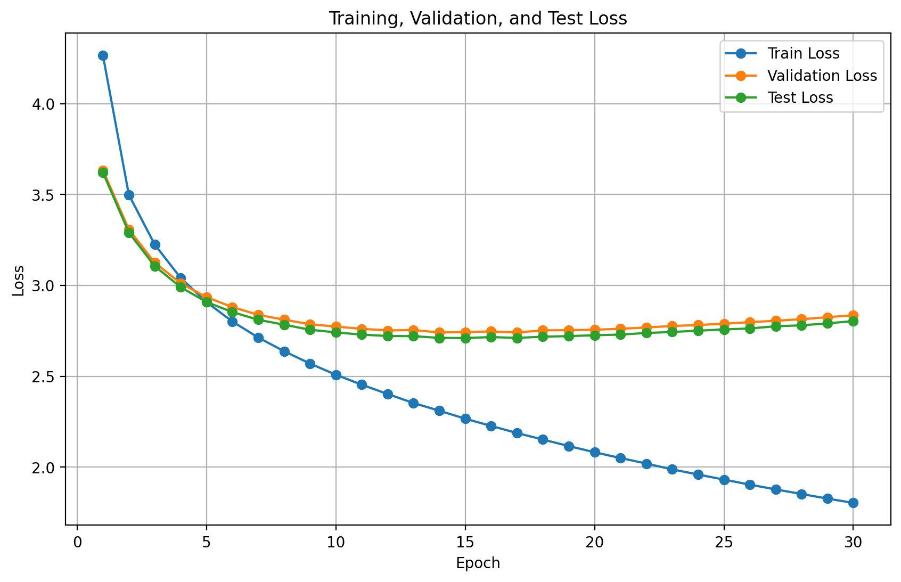
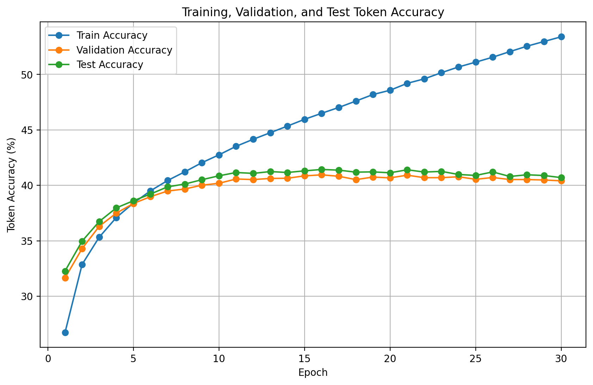

Results and Training Curves
This page explains what happened during training and how to read the loss and accuracy curves.
Final logged performance
The training log contains 30 epochs with train, validation, and test loss and token accuracy. The final epoch shows:
| Split | Loss at epoch 30 | Token accuracy at epoch 30 | Meaning |
|---|---|---|---|
| Train | 1.8039 | 53.40% | The model keeps improving on training captions. |
| Validation | 2.8361 | 40.41% | Generalization has mostly stopped improving by later epochs. |
| Test | 2.8036 | 40.70% | Held-out token accuracy is close to validation accuracy. |
Loss curve

Lower loss is better. The training loss keeps decreasing, while validation and test loss flatten and then slowly rise.
How to interpret this graph
- Training loss decreases steadily: the model is learning the training captions.
- Validation/test loss improve early: the model learns useful patterns in the first part of training.
- Validation/test loss rise later: this suggests overfitting. The model is becoming better on training data but not better on unseen data.
Accuracy curve

Higher token accuracy is better. Training accuracy continues rising, while validation and test accuracy stay near 40-41%.
How to interpret this graph
- Training accuracy rises to about 53%: the model is increasingly fitting training captions.
- Validation/test accuracy plateau: the model reaches a generalization limit with the current setup.
- The gap matters: train accuracy is much higher than validation/test accuracy, which again indicates overfitting.
Why token accuracy is not the full story
Token accuracy checks whether the exact next word is correct. But image captions can have many correct versions.
Reference caption
a man is standing in the snow
Also reasonable
a person stands on a snowy mountain
These captions can describe the same image, but token accuracy may punish the second one because the words are not exactly the same. That is why captioning papers usually report sentence-level metrics such as BLEU, METEOR, ROUGE, CIDEr, and SPICE.
What is good about the current result?
End-to-end pipeline works
The project downloads data, builds vocabulary, trains the model, saves checkpoints, logs metrics, plots curves, and predicts captions.
Good educational baseline
The CNN-LSTM design is easy to understand and is a strong first model for learning image captioning.
Pretrained visual features
Using ResNet18 features gives the decoder a useful visual signal without training a CNN from scratch.
Clear next improvement path
The curves clearly show where to improve: reduce overfitting and improve caption-level evaluation.
Limitations
| Limitation | Why it matters | Improvement |
|---|---|---|
| Frozen ResNet18 | The encoder cannot adapt deeply to Flickr8k. | Unfreeze later layers with a small learning rate. |
| No attention mechanism | The decoder receives one global image vector only. | Add visual attention so each word can focus on image regions. |
| Greedy decoding | Always choosing the top word can produce short or generic captions. | Use beam search with length normalization. |
| Token accuracy only | Does not fully measure caption quality. | Add BLEU, METEOR, ROUGE, CIDEr, and qualitative examples. |
Conclusion
The model is a clean and working image captioning baseline. It successfully connects a CNN image encoder with an LSTM language decoder. The training curves show that the model learns, but also that generalization plateaus early. This makes the project excellent for a learning blog, and it gives a clear foundation for stronger captioning systems.